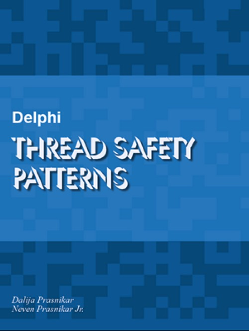

Delphi Thread Safety Patterns
Writed by : Dalija Prasnikar, Neven Jr Prasnikar
Published date : 31/05/2022
Language :  English
English
Web site : https://dalija.prasnikar.info/delphitspatt/
About Delphi Thread Safety Patterns
While the thread safety of a particular piece of code depends on the surrounding context and how it is used, some data types are inherently unsafe, and for some of them, thread safety will depend on the use case and the specific code. Unfortunately, when you look at some class, type declaration, or API in isolation, there is very little information there that will tell you whether instances of that type can be safely used in multiple threads, or under which conditions.
The proper place to learn about the thread safety of an API is its documentation. However, most documentation will not explicitly give you that information. Occasionally, the documentation will mention that a particular feature is not thread-safe, or will tell you that a feature can be used in background threads, but for the most part, you will have to figure out thread safety on your own. One reason for this is that thread safety depends on the context. The number of features that are absolutely unsafe or are absolutely safe is very small.
The basic thread safety rules are simple, but applying those rules is more complicated. Just as design patterns give us general solutions to common coding problems, we can extract common coding patterns from various multithreaded code—thread safety patterns.
This book converts the thread safety rules into practice, and gives an overview of core Delphi frameworks and commonly used features from a thread safety perspective. You will find examples of how particular classes can be used in a thread-safe manner and how to perform some common tasks, following the already established thread safety patterns.
Besides elaborating on the thread safety of particular parts of Delphi frameworks, the book explores the thread safety of alternate solutions, along with general coding examples. Every explanation about why some code is thread-safe or not, also serves as an example of thread (un)safety patterns, and helps in recognizing thread-unsafe code, as well as establishing a working set of thread safety patterns that can later be applied in custom code.
Those examples, covering the most commonly used parts of Delphi frameworks, will also serve as learn by example pointers for determining the thread safety of other parts of the frameworks, and even of 3rd-party libraries that are not specifically covered in this book.
There are also implementations and examples of some commonly used concepts in asynchronous programming that are not part of the core Delphi frameworks, but can be indispensable when writing multithreaded code.
Where to buy ?
If this book is still available for sale, you probably can order it on its website.
Table of content
Introduction
Part 1. Thread Safety
* Language and general thread safety
* Proving thread safety
* Examples
+ Data type thread safety
+ Thread-safe data types used in an unsafe manner
+ Code thread safety
Part 2. The Core Run-Time Library
* Global state
* Floating-point control register
* FormatSettings and formatting routines
* Global functions and procedures
+ Parameters
+ FreeAndNil
+ Class methods
+ Other global functions
* Class fields, singletons, and default instances
+ Class constructors and initialization section
+ Thread-safe lazy initialization
+ Writeable instances
* Core classes
+ Core classes
+ Custom classes
* Threads
+ FreeOnTerminate
+ Starting a thread
+ Order of destruction
+ Custom thread's data
* Streams
* Collections
+ Making a thread-safe variant of a thread-unsafe collection
+ Thread-safe iteration
+ Partial locking
+ False sense of the security
+ Wrappers vs inheritance
+ Immutable collections
* Parallel collection processing
* Components
+ Using components in background threads
+ Component streaming
* RTTI
Part 3. Core Frameworks
* Serialization
+ Protecting the Data
- Unshared data
- Read-only data
- Mutable data protected by a synchronization mechanism
+ Protecting the serializer
- Function, procedure or class method
- Stateless or immutable serializer instance
- Stateful serializer instance
+ Net encoding classes
+ JSON
+ XML
* System.Net
* Asynchronous Programming Library
* Indy
* REST
* Regular expressions
Part 4. Visual Frameworks - VCL and FMX
* Visual framework components
* LiveBindings
* VCL and FMX controls
* Interactions with OS APIs and frameworks
+ Window allocation and de-allocation
+ Windows messaging
+ Timers
Part 5. Graphics and Image Processing
* Graphics and image processing
+ Graphics and image processing
+ Graphics platforms and frameworks
* Resource consumption
* Common graphics types and API
* VCL graphics types and API
+ Fonts, pens, and brushes
+ Canvas
+ Graphics
+ Picture
+ Vcl.GraphUtil
+ VCL image collections
* VCL graphics example
* FMX graphics types and API
Part 6. Custom Frameworks
* Writing custom frameworks
* Logging
* Cancellation tokens
* Event bus
* Measuring performance
Appendix
* References
* Quality Portal Reports